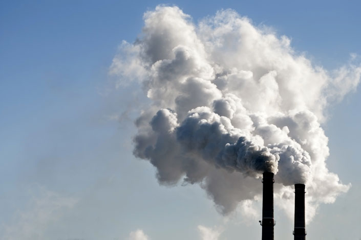

Carbon Emissions

Contrary to popular belief, carbon dioxide is actually very important for the environment. It makes up a small percent of the atmosphere, and it traps the sun's rays inside the atmosphere. This makes our planet warmer, an effect known as the "greenhouse effect", and we might have all died of cold if carbon dioxide were nonexistent.
So, what's the problem? In recent years, we've pumped out more carbon dioxide from our factories and cars than the environment can handle — in fact, we humans have increased carbon dioxide by a third since the Industrial Revolution. This extra carbon dioxide joins the original carbon dioxide, heating up the planet more. This heat, in turn, can disrupt the balance of the ecosystem by melting important glaciers and making it harder for heat-intolerant species to survive… and prompting us to use more air conditioning, which gives off more CO2. CO2 (the shorthand for carbon dioxide), then, is a good thing, but only in small amounts.